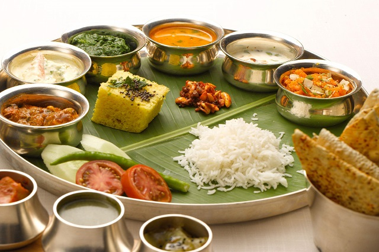

{kind=link}

Even some monuments are ideal for architectural skills, for example, Taj Mahal, Red fort, Sheesh Mahal etc. Some historical monuments in India attract science seekers also due to the science behind the construction of the monument. For example Jantar Mantar is a famous observatory in India. Not in one all different types of historical monuments will make you enjoy and learn something from them.
Famous Natural spots: Mount Abu Hill station, Pichola Lake in Udaipur, Dal Lake in Jammu and Kashmir, Nubra valley in Ladakh, different falls in Kerala.
India is a spiritual country because of nowhere you can see in the world as much as India. India is totally filled with a lot number of large temples and ashrams. Many foreigners visit these places for a pleasant and peaceful environment. These places are re-defined with spiritual programmes like Yoga, workouts, meditation training etc. Many foreigners are mostly like to visit India for learning Yoga.
In India Yoga can be taught in a peaceful and tranquil environment means ashrams. Different ashrams in India will teach you a define Yoga and they can turn as you Yoga teachers also. Different temples in India attracts tourists mostly are Jainism and Buddhism temples and others.
India is the defined place for seeking Yoga, Meditation, and traditional practices which helps you in different ways. Even some people visit India and spends some days in ashrams for seeking all these actions.
Famous spiritual centers: Golden temple in Amritsar, Dharmasala and Manali in Himachal Pradesh. Parmarth Niketan in Rishikesh.

India is famous for the different type of safaris like wildlife safaris, desert safaris, etc. India is a place of different national sanctuaries and tiger reserves. In India, wildlife safari is available which we can experience the wildlife of tigers and different animals. Wildlife safari in India will give you a memorable and adventurous trip in your life.

India is the right place for many adventurous acts. For the best experience visit north India because it is the place for adventurous acts the nearby Himalayas and different valleys, rivers, mountains. A large number of tourists visits India for a thrilling and adventurous holiday trip.
The famous adventurous acts in India are Bungee jumping, Trekking, Paragliding, scuba diving, Dune bashing etc. The feeling you will get while doing these acts is weird and unforgettable in your life. For the adventure seekers, India is the apt place. So have an adventurous trip to India.
Famous adventurous spots: Rishikesh, Bir Billing, Andaman Islands, Rajasthan.

Apart from tourist places, India is famous for its delicious food. The food on streets and in restaurants are tasty and delicious. After completing trips tourists not require tired to search for food. Because everywhere food is available on roads or in hotels. India is home to different species so tourists can enjoy all different types of varieties.
Every state has its unique speciality in food items. Where ever you go in India the food will not disappoint you. Many tourists like to taste Indian hot and spicy food. So try to taste all varieties of food in your location.
India is well-known as the land of arts and cultures. Many artists in all over the world from India. In India arts and cultures are mostly encouraged because not to forget our ancestral cultures. Every place in India is famous for different arts and cultures.
During festivals you can experience the Indian arts and cultures. At the time of different festivals, these arts and cultures will be reflected at up most. In one word, these arts and cultures are the symbols of Indian culture and heritage.
Another attraction is shopping in India. There will be many shopping complexes in nearby tourist places. The things available in India will be different and attractive. Many foreigners like shopping in India. The major attractions in India for shopping are the artifacts, handicrafts, souvenirs, hand looms, clothes etc.
India is at topmost in arranging luxurious needs to tourists. There will be resorts and hotels at all nearby most popular tourist places. The maintenance of these resorts and hotels are neat and luxurious to spend a holiday trip with all needs as you feel at home.
Indians will treat the tourists in a respective manner. The receiving manner of Indians is very respective and helpful. Residents will help the tourists to take a tour to all nearby tourist places. They will be always helpful to the tourists because Indians follows the slogan “Atithi Devo Bhava”